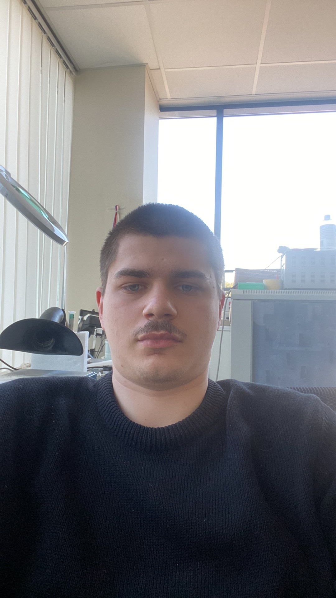
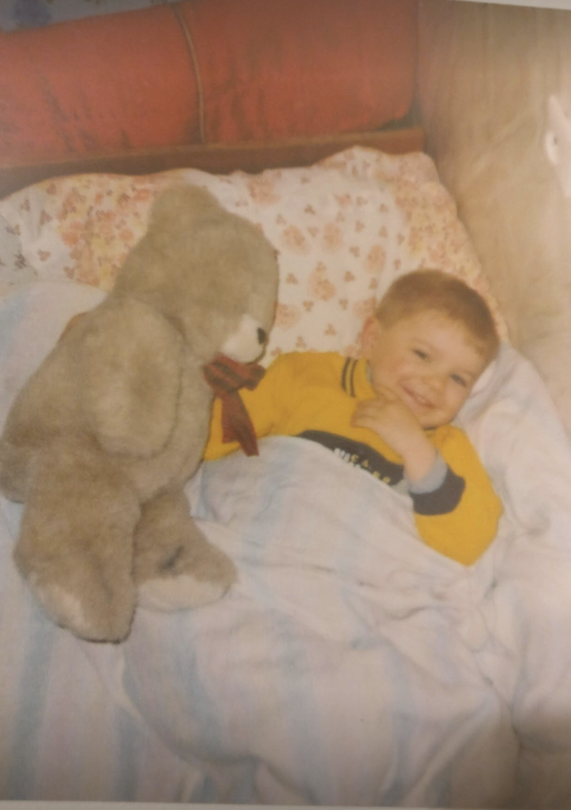

Man 21 metai
 Turiu dogą, kurio vardas Beilis

Du kartus mečiau universitetą, tačiau jau po truputi atrandu save ir tuo džiaugiuosi, užsiiminėju autosportu bei daug daug sporto šakų kaip tenisas, krepšinis, futbolas.
Esu iškritęs iš važiuojančios mašinos
savo nuotraukos jau nerasiu :(